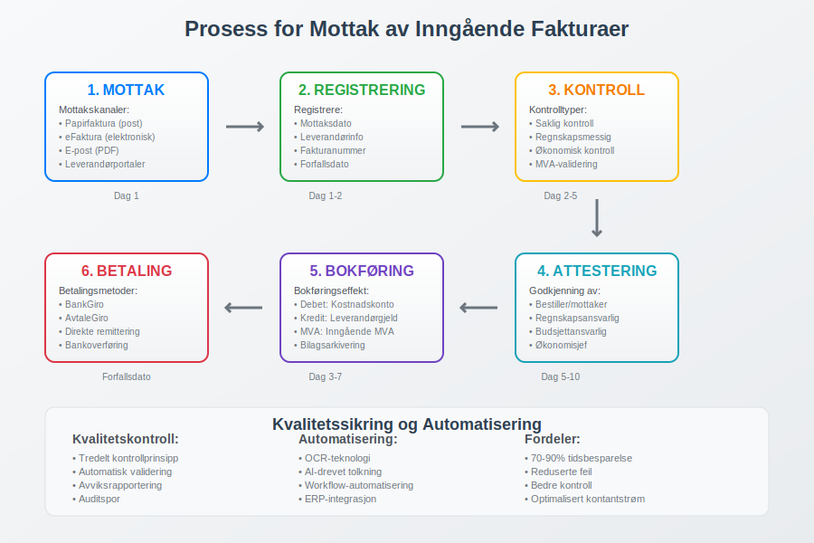
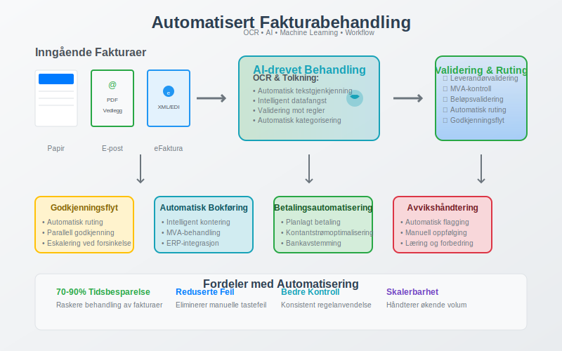

En inngående faktura er en faktura som bedriften mottar fra leverandører for kjøp av varer eller tjenester. Dette er motsatsen til utgående fakturaer som bedriften sender til sine kunder. Inngående fakturaer representerer bedriftens kostnader og gjeld, og må behandles systematisk for å sikre korrekt bokføring og kontroll med bedriftens utgifter.
Behandling av inngående fakturaer er en kritisk del av bedriftens internkontroll og påvirker direkte arbeidskapitalen gjennom leverandørgjeld og kontantstrøm.
Seksjon 1: Mottak og Registrering av Inngående Fakturaer
Første steg i behandlingen av inngående fakturaer er systematisk mottak og registrering. Moderne bedrifter har etablert strukturerte bilagsmottak for å sikre at alle fakturaer blir fanget opp og behandlet korrekt.

Mottakskanaler for Inngående Fakturaer
Inngående fakturaer kan mottas gjennom flere kanaler:
- Papirfakturaer: Tradisjonelle fakturaer mottatt per post
- eFaktura: Elektroniske fakturaer mottatt direkte i bedriftens system
- E-post: Fakturaer sendt som PDF-vedlegg
- Leverandørportaler: Fakturaer lastet ned fra leverandørenes nettsider
- ERP-integrasjoner: Automatisk mottak gjennom systemintegrasjoner
Registrering og Nummerering
Alle inngående fakturaer må registreres systematisk med:
- Mottaksdato: Når fakturaen ble mottatt av bedriften
- Leverandørinformasjon: Navn, organisasjonsnummer og kontaktinformasjon
- Fakturanummer: Leverandørens fakturanummer
- Internt referansenummer: Bedriftens eget sporingsnummer
- Forfallsdato: Når fakturaen må betales
Seksjon 2: Kontroll og Validering
Etter mottak må alle inngående fakturaer gjennom en grundig kontrollprosess før de kan godkjennes for betaling. Denne kontrollen er en del av bedriftens attestering og sikrer at bedriften kun betaler for varer og tjenester som faktisk er mottatt.
Tredelt Kontrollprosess
| Kontrolltype | Ansvarlig | Kontrollpunkter |
|---|---|---|
| Saklig kontroll | Bestiller/Mottaker | • Er varen/tjenesten levert som avtalt? • Stemmer kvalitet og kvantitet? • Er prisen i henhold til avtale? |
| Regnskapsmessig kontroll | Regnskapsansvarlig | • Er fakturaen korrekt kontert? • Er MVA beregnet riktig? • Er alle obligatoriske opplysninger til stede? |
| Økonomisk kontroll | Budsjettansvarlig | • Er kjøpet innenfor budsjett? • Er det gitt nødvendig fullmakt? • Er betalingstidspunkt optimalt? |
Validering av Fakturainnhold
Inngående fakturaer må valideres mot følgende krav:
- Leverandørvalidering: Kontroll av at leverandøren er registrert i Enhetsregisteret
- MVA-validering: Kontroll av MVA-nummer og korrekt MVA-beregning
- Beløpsvalidering: Kontroll av at totalbeløp stemmer med delbeløp og MVA
- Datovalidering: Kontroll av at fakturadato og forfallsdato er rimelige
Seksjon 3: Automatisering av Fakturabehandling
Moderne bedrifter implementerer i økende grad automatiserte løsninger for behandling av inngående fakturaer. Fakturatolk-teknologi kan dramatisk redusere manuelt arbeid og forbedre nøyaktigheten i fakturabehandlingen.

Fordeler med Automatisering
- Tidsbesparelse: Reduserer behandlingstid med 70-90%
- Reduserte feil: Eliminerer manuelle tastefeil og tolkningsfeil
- Bedre kontroll: Automatisk validering mot forretningsregler
- Raskere godkjenning: Automatisk ruting til riktig godkjenner
- Forbedret sporbarhet: Komplett auditspor for alle transaksjoner
Teknologier for Automatisering
- OCR (Optical Character Recognition): Automatisk lesing av papir- og PDF-fakturaer
- AI og maskinlæring: Intelligent tolkning og kategorisering
- Workflow-automatisering: Automatisk ruting basert på forretningsregler
- Integrasjoner: Kobling mot ERP-systemer og regnskapsprogrammer
Seksjon 4: Bokføring av Inngående Fakturaer
Etter godkjenning må inngående fakturaer bokføres korrekt i bedriftens regnskap. Dette påvirker både balansen og resultatregnskapet.
Bokføringseffekter
Når en inngående faktura bokføres, skjer følgende:
- Debet: Relevant kostnadskonto eller anleggsmiddel
- Kredit: Leverandørgjeld (kortsiktig gjeld)
- MVA-behandling: Registrering av inngående MVA som fradragsberettiget
Konteringseksempler
| Fakturatype | Debet-konto | Kredit-konto | MVA-behandling |
|---|---|---|---|
| Kontorrekvisita | Kontorkostnader | Leverandørgjeld | 25% inngående MVA |
| Maskinkjøp | Anleggsmidler | Leverandørgjeld | 25% inngående MVA |
| Konsulenthonorar | Konsulentkostnader | Leverandørgjeld | 25% inngående MVA |
| Forsikring | Forsikringskostnader | Leverandørgjeld | MVA-fritatt |
Seksjon 5: Betalingshåndtering
Etter bokføring må inngående fakturaer betales innen forfallsdato for å unngå forsinkelsesrenter og opprettholde gode leverandørforhold.
Betalingsmetoder for Bedrifter
- BankGiro: Tradisjonell betaling via nettbank
- AvtaleGiro: Automatisk trekk for faste leverandører
- Direkte remittering: Bedriftens eget automatiske betalingssystem
- Bankoverføring: For internasjonale betalinger
Optimalisering av Betalingstidspunkt
Smart håndtering av betalingstidspunkt kan forbedre bedriftens arbeidskapital:
- Utnytt betalingsfrister: Betal på forfallsdato, ikke tidligere
- Forhandle betalingsbetingelser: Lengre kredittid forbedrer kontantstrøm
- Kontantrabatter: Vurder om tidlig betaling gir lønnsomme rabatter
- Sesongmessige hensyn: Tilpass betalinger til bedriftens kontantstrøm
Seksjon 6: Leverandørstyring og Oppfølging
Systematisk håndtering av inngående fakturaer er en del av bredere leverandørstyring som påvirker bedriftens anskaffelsesprosesser og leverandørforhold.
Leverandørregister og -oppfølging
- Leverandørvalidering: Kontroll av leverandørers legitimitet og kapasitet
- Betalingshistorikk: Sporing av betalingsmønstre og -ytelse
- Kontraktsoppfølging: Sikre at fakturaer stemmer med avtaler
- Ytelsesmåling: Evaluering av leverandørers service og kvalitet
Risikostyring
Inngående fakturaer representerer flere risikoområder:
- Svindel: Falske fakturaer eller leverandører
- Dobbeltbetaling: Betaling av samme faktura flere ganger
- Overbetaling: Betaling av feil beløp eller ikke-leverte tjenester
- Compliance: Sikre overholdelse av regnskapsregler og skattelovgivning
Seksjon 7: Digitalisering og Fremtidige Trender
Behandling av inngående fakturaer er i rask utvikling mot full digitalisering. Elektronisk fakturering blir stadig mer utbredt og vil på sikt erstatte papirbaserte prosesser.
Fremtidige Utviklingstrender
- AI-drevet automatisering: Mer intelligent behandling og kategorisering
- Blockchain-teknologi: Sikker og sporbar fakturabehandling
- Sanntidsintegrasjoner: Direkte kobling mellom leverandør- og kundesystemer
- Prediktiv analyse: Automatisk oppdagelse av avvik og potensielle problemer
Regulatoriske Endringer
Norske myndigheter jobber mot økt digitalisering:
- Krav til elektronisk fakturering: Særlig for offentlige anskaffelser
- Standardisering: Felles formater og protokoller
- Rapporteringskrav: Økt krav til sporbarhet og dokumentasjon
Seksjon 8: Beste Praksis og Anbefalinger
For å optimalisere behandlingen av inngående fakturaer anbefales følgende:
Organisatoriske Tiltak
- Tydelige rutiner: Dokumenterte prosedyrer for alle steg
- Ansvarsfordeling: Klar fordeling av roller og ansvar
- Kompetanseutvikling: Opplæring i fakturabehandling og systemer
- Regelmessig evaluering: Kontinuerlig forbedring av prosesser
Tekniske Løsninger
- Integrerte systemer: Kobling mellom fakturabehandling og ERP
- Automatisering: Reduser manuelt arbeid der det er mulig
- Backup og sikkerhet: Sikre oppbevaring av fakturaer og data
- Mobilløsninger: Mulighet for godkjenning på farten
Økonomiske Hensyn
- Kostnad-nytte-analyse: Vurder investeringer i automatisering
- Leverandørforhandlinger: Optimaliser betalingsbetingelser
- Kontantstrømstyring: Koordiner betalinger med inntekter
- Budsjettoppfølging: Bruk fakturaer til løpende budsjettkontroll
Effektiv behandling av inngående fakturaer er grunnleggende for god økonomistyring og bidrar til bedre arbeidskapital, reduserte kostnader og forbedret leverandørsamarbeid.